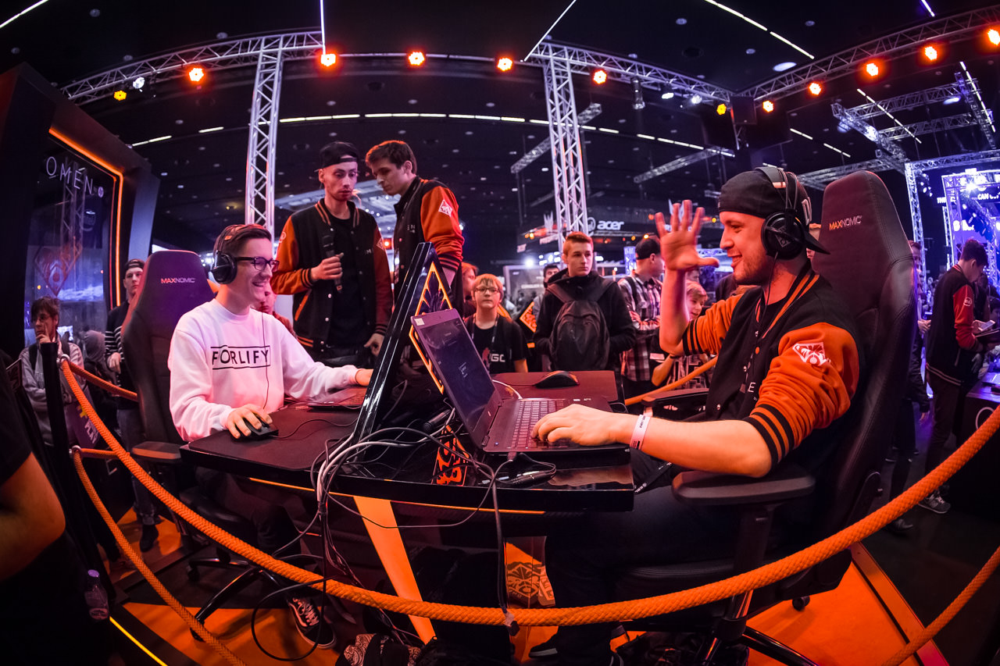
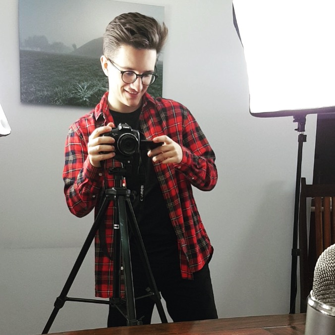
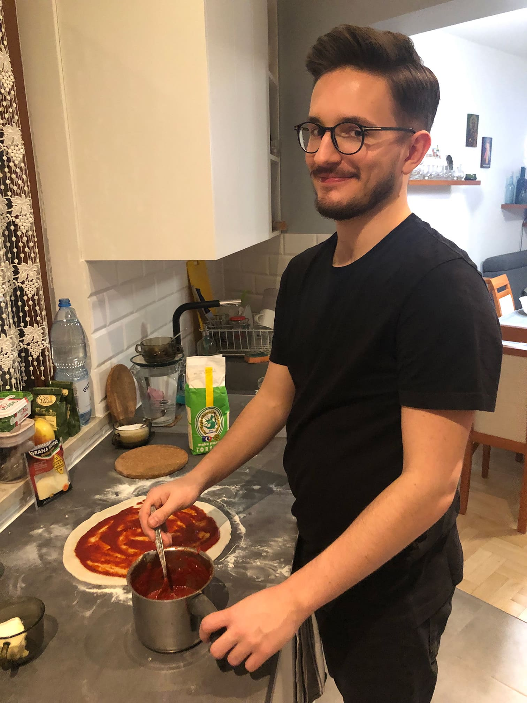
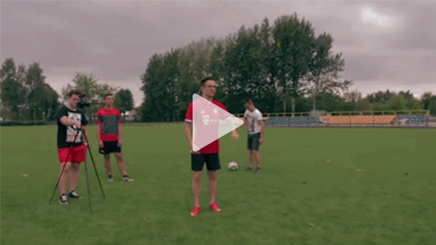
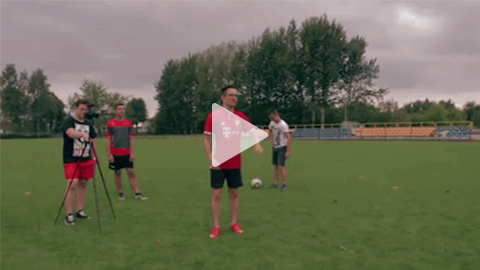
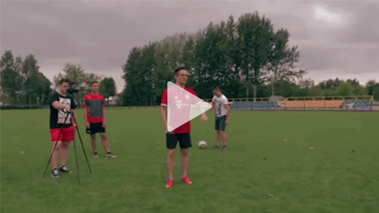

OTHER



 


Over the years I have had a numer of hobbies. For instance, couple of years ago I was making a significant number of youtube videos for my gaming channel. Having a great number of followers affected my life in many ways. Most of all, having the channel had taught me how to work systematically. Besides the youtube channel, I was developing other hobbies such as running and cooking - those are the things that I enjoy doing in my spare time. Additionally, I am a great fan of FC Bayern Munich.